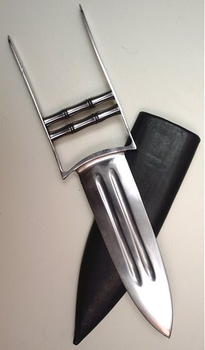

Forums galactiques > Assemblée Galactique : diplomatie officielle > yable et Nenel : Carnage au systeme 9
| OverLorD Respect diplomatique : 0  02/10 ETU 19:09  | Score : 0 Détails nous n'avons pas d'autre précédent en la matiere vlad , de quoi parler vous par "sans cesse"? j'ai l'impression que votre énervement dépasse l'incident avec spectror.
Si nous déclarons que ce n'est pas un ordre de notre coalition , c'est que cela est vrai. Cessons de parler et attendons les explications de spectror. @Ness : la discretion est la clé de réussite d'opération , vos relations avec ulina nous somt inconnu , le grand public n'a pas a etre mis au courant de la stratégie qu'on emploi , sans ca elle raterais , vous n'etes décidement pas objectif , on vous a prévenu vous avez déclarer vous méfier , vous avez pris vos responsabilité , nous avons fait notre part en prévenant. Vous serez remboursez , pourkoi continuer a nous diaboliser. | ||
| Nenel Respect diplomatique : 211  02/10 ETU 19:11 | Score : 0 Détails Je suis d'accord avec vous. Il s'agit d'un acte grave. Je me suis déjà exprimé sur l'utilisation d'une telle arme. Je vous invite à relire les archives à ce sujet, pour connaitre plus en détail mon point de vue.
A chaque affaire (et je ne vois que le cas de Ness pour l'instant), nous avons donné une explication et effectué des dédommagements. Que pouvons nous faire de plus? Laissez Spectror s'exprimer à ce sujet. Je suis aussi intéressé que vous de connaître sa version des faits. Nenel | ||
| Vlad Ivostock III Respect diplomatique : 61  02/10 ETU 19:13 | Score : 0 Détails Excusez mon enervement mais j'ai perdu plus de 40 croiseurs ioniques et 20 portenefs!
Vlad Ivostock III | ||
| Nenel Respect diplomatique : 211 02/10 ETU 19:15 | Score : 0 Détails Ne vous inquiétez pas commandant, nous comprenons votre énervement.
J'espère que cette histoire va pouvoir se régler diplomatiquement... Nenel | ||
| OverLorD Respect diplomatique : 0 02/10 ETU 19:18 | Score : 0 Détails Malgres mon enervement apparent , moi aussi je comprend et compati avec vous , nous allons trouver une solution quelquelle soit pour réparer ces erreurs.
Ce que je n'apprécie pas c'est que l'on nous traine dans la boue. | ||
| Necrid Respect diplomatique : 26  02/10 ETU 19:22 | Score : 0 Détails Commandant Vlad Ivostock III,
En votre qualité de chef de la diplomatie de votre coalition, il serait pour le moins souhaitable que vous entriez en contact avec le chef de la diplomatie de la Corporation Bleue, qui n'est autre que moi-même. Il y a plusieurs jours de cela, je vous ai proposé de vous rencontrer en tête-à-tête mais je n'ai toujours pas reçu de réponse. Qu'en est-il exactement ? Cordialement, Commandant Necrid, Président du Collège Diplomatique de la Corporation Bleue. | ||
| Le Divin Misengar Respect diplomatique : 0 02/10 ETU 19:25 | Score : 0 Détails le divin misengar se leva est prit la parole il estime venir en se lieu que pour les affaire d extreme urgence.
le divin on tous reçu des attaques de la part de la cb pour la seul raison que la cb avait des soupçons sur le faite qu il comercait avec aigle sombre or si il avait été renseigné correctement il orait su que seul ulina etait commersante. et ulina comme nous lavons dit a trahi les divins nous étions pas au courant de complots et puis la cb elle a des relation tres privé avec yike qui n est pas tout blanc non plus il a pas menacer mais a récuperé une planetes du système 0 alors que laigle lui a menacer mais est en tain de les redistribué . tout sa pour dire que lorsque j ai essayé de reprendre contacte pour que mes planetes soit rendu les seul reponce a été de la part des comandanst de la cb contentez vous d être encor en vie . que ces parole son diplomatique est c est elle qui se dit etre protectrice de luniver arrêton ces mensonges.... je tiens a mentioné que le comandant morcar a lui fait preuve de bone foi est a restitué les planetes prise nous lui sommes reconaissant. son discourt une foi terminer le divin misengar se retira espérant que les comandant réagiront a son appel | ||
| Vlad Ivostock III Respect diplomatique : 61 02/10 ETU 19:28 | Score : 0 Détails Je veux bien vous parler en privé.
Vlad Ivostock III | ||
| Ness Respect diplomatique : -2 02/10 ETU 19:49 | Score : 0 Détails Je ne continuait pas a diabolisé commandant OverLorD, mais entendre dire que c'est de ma faute me met hors de moi, j'espere que vous comprenez.
Quoi qu'il en soit, je concidère l'incident clot, en ce qui me concerne. | ||
| Le Dieu Thor Respect diplomatique : 0 02/10 ETU 19:53 | Score : 0 Détails Mon frère misengar a raison: la CB nous attaque et se permet de prendre nos planetes (je pense notamment à notre frère Sirthi, à qui ils ont pris les 3/4 de ses planetes avant de le tenir en chantage). Il doit dénoncer Ulina ou alors il ne lui rendront pas ses planètes! Je trouve cela inadmissible!!
Surtout que Ulina a agit seul et nous a trahi par la même occasion! Nous n'avons pas à assumer et payer ses actes! Au lieu de se prendre pour la police, et croire faire justice, ils font tout l'inverse, avanr même de savoir si l'on est innocent ou pas! N'est-ce pas Nenel, soi-disant défenseur de la paix? Je vais m'arreter là car certains penseront que je suis là pour pleurnicher. | ||
| Akhenaton Respect diplomatique : 0  02/10 ETU 20:07 | Score : 0 Détails Toute est justifiée, depuis longtemps deja la coalition "les divins" menace et nargue la CB, voila la réponse.
Arretez de tous vouloir nous miner inutilement, de tous les cotés, afin de nous couler. Nous, nous sommes organisés, et toutes ces menaces inutiles ne feront que nous renforcer. Nous sommes conscient de notre force, et ne voulons que répandre la paix, notre réseau diplomatique est l'un des meilleur, et certains membres se sont deja fait remarqué a travers de spectaculaires iterventions. Réfléchissez bien avant de nous prendre pour des bourreaux. Akhenaton, digne membre de la Corporaton Bleue. | ||
| Nenel Respect diplomatique : 211 02/10 ETU 20:17 | Score : 0 Détails Je ne répondrai pas à vos propos. Pensez ce que vous voulez de moi je m'en moque. Je ne fais pas un concours de popularité.
Les seules personnes que vous arriverez à convaincre par vos propos sont les personnes qui veulent ma mort et celle de la CB. Cela ne sert donc à rien. Quant à ceux qui me connaissent, ils savent très bien qui je suis et quels sont mes principes. Vos tentatives de discrétidations sont vaines. Je continuerai dans la voie de la diplomatie pour arriver enfin à un monde de paix. Autrefois mon ancêtre à également essayé d'arriver à ce but sans utiliser une seule arme. L'histoire nous a apprit où nos ancêtres sont arrivés... A l'Apocalypse. C'est pourquoi je ne ferai pas les mêmes erreurs que lui. Je prendrai les armes si il le faut pour lutter contre ceux qui menacerons l'équilibre et la paix de la galaxie. Commandant Nenel | ||
| kaTar Respect diplomatique : 0  02/10 ETU 20:17 | Score : 0 Détails "Je suis désolé commandant, mais je juge que l'utilisation de bombes HA n'est pas la meilleure option pour "répandre la paix"... Mes flottes, qui devaient me servir à aider Yik de mon mieux, ont été décimées. Si vous souhaitez la paix dans la galaxie, alors agissez réellement, puisque vous ètes sûres de votre force, car jusqu'à présent la corporation n'a que trop parlé, mais que trop peu agit. Dans cette guerre bipolaire, vous ne choisissez aucun camp, mais n'en proposez aucun. Je suis de l'avis que la corporation attend l'affaiblissement des deux camps pour devenir la plus grande puissance galactique. Et alors, la police risque de devenir le dictateur. Certains de vos membres semblent ne même pas pouvoir attendre assez longtemps pour faire rêgner la terreur dans les systemes des nouveaux commandants."
| ||
| kenuo Respect diplomatique : -14  02/10 ETU 21:53 | Score : 0 Détails Kenuo que l'ont n'avait pas vu depuis longtemps s'avança avec l'air grave qu'il avait depuis qu'il avait entendu les révélations.
Commandants de la corporation bleu, commandant blameur, commandant neutre: Les révélations du galac mac sont absolument et pleinement fausse, de plus si vous regardez bien, le minable "copier coller" de notre forum date de presque un mois, alors de quel complot de prise de pouvoir parlez vous? Il n'en est absolument pas sujet sur ce torchon!!! De meme pour les informations sur nos troupes, il n'y pas la exposé la totalité de notre puissance de feu et cette list n'est certainement pas à jour! Pour contredir les idée de katar, nous avons proposé une alternative a yik et l'aigle, la resistance, nous avons aidé des commandant a se défendre en les subvantionnant, en leur envoyant des troupes,...Donc a vous de mieu lire les archives de l'assemblé! Tout ceci n'a rien de blamable et surtout rien d'un "complot" Alors cher collègues, ne jugez pas sans savoir ni sans connaitre tous les faits Sur ces mots, je voudrai que vous réfléchissiez car maintenant que nous n'existons plus, aucune autre alliance ne poura vous aider si besoin en est!!! Kenuo ayant terminé son discours, il se rassit la tête rouge, jamais il n'avais été aussi énervé!!!! | ||
| OverLorD Respect diplomatique : 0 03/10 ETU 12:50 | Score : 0 Détails Les divins ont pactisé avec le diable , a eux d'assumer.
| ||
| Imothep Respect diplomatique : 571  03/10 ETU 13:08 | Score : 0 Détails La coalition bleue dont jhe faisais parti a tout autant pactisé avec aigle sombre pour récupérer le système 0 !!!!
J'en ai assez de servir de paravent à un mensonge éhonté !! Au moins cessez d'accuser les autres de vos propres actes !!! | ||
| OverLorD Respect diplomatique : 0 03/10 ETU 13:10 | Score : 0 Détails pactisé non , comment pouvez vous etre de si mauvaise foi vous qui avait vu le traité de treve sous les yeux. on ne peut le toucher , il est dans des systemes fermés.
| ||
| Imothep Respect diplomatique : 571 03/10 ETU 13:18 | Score : 0 Détails Je ne suis pas de mauvaise foi : la coalition bleue, ou plutot un noyau dur, a échangé le système 0 contre sa neutralité face à Aigle Sombre.
Nous aurions le droit de pactiser et pas les autres ? | ||
| yable Respect diplomatique : 250  03/10 ETU 13:20 | Score : 0 Détails Il y a une différence entre pactiser avec un quelqu'un qui se fait passer lui meme pour un tyran pour atteindre ses objectifs et quelqu'un qui explique apres coup ses actions et qui accepte de négocier.
| ||
| Imothep Respect diplomatique : 571 03/10 ETU 13:59 | Score : 0 Détails Certes, je ne dis pas le contraire, mais alors qu'on naccuse pas les autres d'horreurs, quand ils n'ont fait que la même chose que nous.
|
Forums galactiques > Assemblée Galactique : diplomatie officielle > yable et Nenel : Carnage au systeme 9